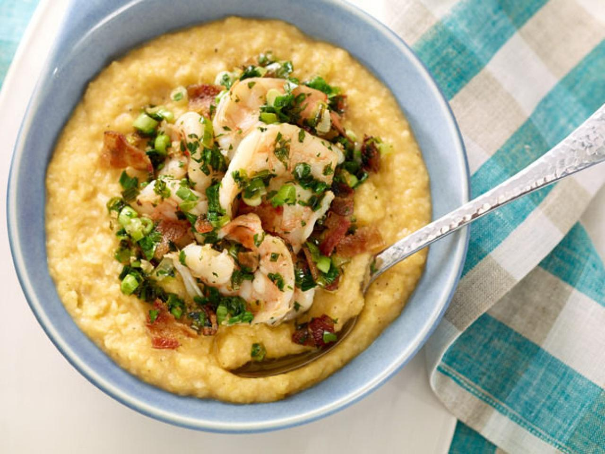

Shrimp & Grits

Description
Shrimp and grits
Ingredients
- 4 cups water
- 1 cup stone-ground grits
- 3 tbsp butter
- 2 cups shredded sharp cheddar cheese
- 1 lb shrimp
- 6 slices bacon
- 4 tsp lemon juice
- 2 tbsp chopped parsley
- 1 cup sliced scallions
- 1 clove garlic, minced
Steps
- Bring water to a boil. Add salt and pepper. Add grits and cook until water is absorbed, about 20 to 25 minutes. Remove from heat and stir in butter and cheese.
- Rinse shrimp and pat dry. Fry the bacon in a large skillet until browned; drain well. In grease, add shrimp. Cook until shrimp turn pink. Add lemon juice, chopped bacon, parsley, scallions and garlic. Saute for 3 minutes.
- Spoon grits into a serving bowl. Add shrimp mixture and mix well. Serve immediately.
Main Page